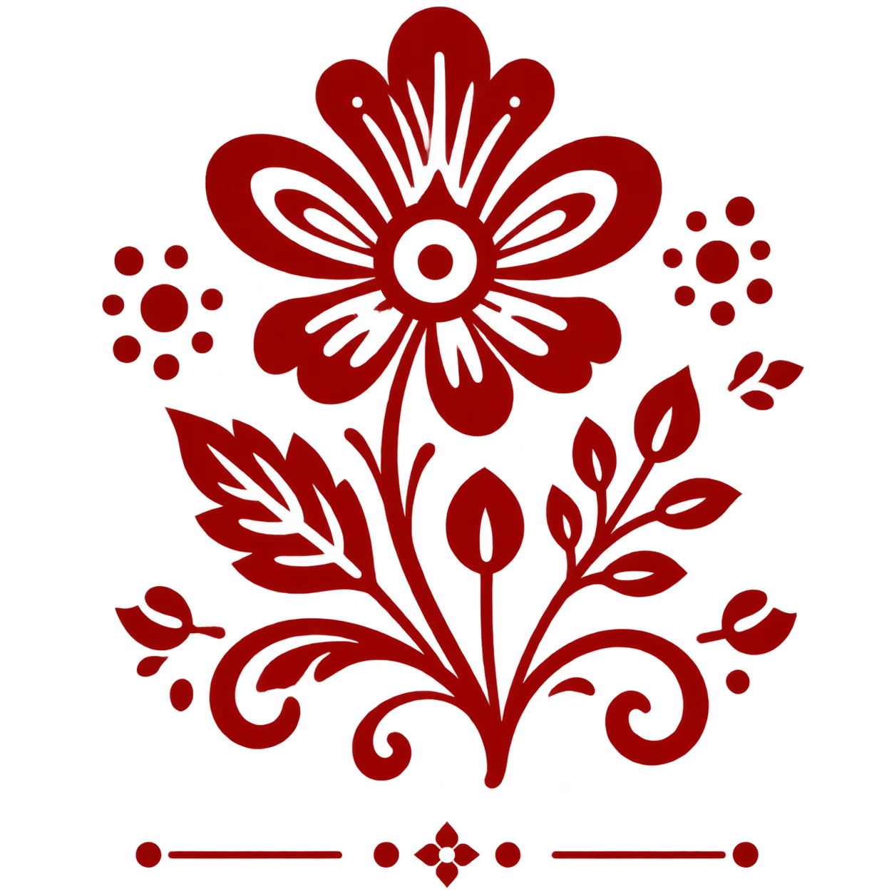

Взаимовыручка и Дружба
На протяжении веков совместный труд, сопереживание и протянутая рука помощи поддерживают народы России.
Россия — дом для более чем 190 народов. Нас объединяет общая история, взаимное уважение, богатейшие традиции, теплота сердец и стремление к созиданию.
Исследовать узоры РоссииГолубь мира и традиционный орнамент — символ согласия, духовности и единства народов нашей страны.
Фундамент нашей страны — это ценности, передающиеся из поколения в поколение
На протяжении веков совместный труд, сопереживание и протянутая рука помощи поддерживают народы России.
Уникальные орнаменты, народные костюмы, сказки и музыка составляют великое культурное достояние.
Любовь к родному дому, уважение к старшим и бережное отношение к наследию предков.
Нажмите на народность, чтобы узнать значение традиционного узора

Цветочные розаны и пышные веточки символизируют цветущую Землю, плодородие, домашний уют и радость.
Каждый уголок страны внес свой неповторимый вклад в историю
Гостеприимство, гордость и старинные башенные комплексы.
Сплетение славянских, тюркских и финно-угорских традиций.
Широта души, богатая тайга и гармония с духом природы.
Мудрость оленеводов, северное сияние и узоры из кости.
Короткая интерактивная загадка о культуре России